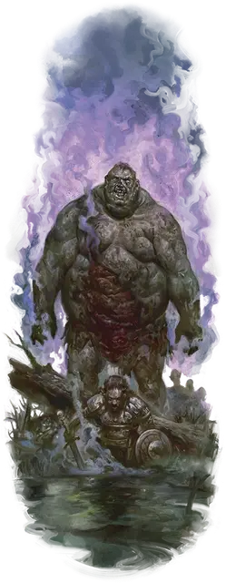

Курганный вурдалак
Barrowghast
Огромная Нежить, обычно хаотично-злая

Класс Доспеха 12 (природный доспех)
Хиты 138 (12к12 + 60)
Скорость 40 футов
| мод | спас | ||
|---|---|---|---|
| СИЛ | 21 | +5 | +5 |
| ЛОВ | 8 | −1 | −1 |
| ТЕЛ | 20 | +5 | +5 |
| мод | спас | ||
|---|---|---|---|
| ИНТ | 5 | −3 | −3 |
| МДР | 9 | −1 | −1 |
| ХАР | 6 | −2 | −2 |
Сопротивление урону некротическая энергия, яд
Иммунитет к состояниям истощение, отравление
Чувства тёмное зрение 60 футов, пассивное Восприятие 9
Языки Великаний
Опасность 7 (2900 опыта)
Бонус мастерства +3
Особенности
Вонь. Все существа, начинающие ход в пределах 5 футов от курганного вурдалака, должны преуспеть в спасброске Телосложения Сл 16, иначе станут отравленными на 1 минуту. Будучи отравленным таким способом, существо не может восстанавливать хиты. При успешном спасброске существо получает иммунитет к Вони всех курганных упырей на 24 часа.
Действия
Мультиатака. Курганный вурдалак совершает две атаки Ударом. Он может заменить одну из атак Ударом Вытягиванием жизни.
Удар. . Рукопашная атака оружием: +8 к попаданию, досягаемость 10 футов, одна цель. Попадание: 18 (2к12 + 5) дробящего урона.
Вытягивание жизни. . Рукопашная атака оружием: +8 к попаданию, досягаемость 10 футов, одно существо. Попадание: 9 (1к8 + 5) урона некротической энергией. Цель должна преуспеть в спасброске Телосложения Сл 16, иначе её максимальное значение хитов уменьшится на количество, равное полученному урону. Это уменьшение длится до тех пор, пока цель не закончит продолжительный отдых. Цель умирает, если этот эффект уменьшает её максимальное значение хитов опустится до 0.
Гуманоид, убитый этой атакой, спустя 24 часа восстаёт из мёртвых в качестве зомби [zombie]. Зомби действует как союзник вурдалака, но не находится под его контролем.
Реакции
Ядовитая рана. Сразу после того как курганный вурдалак получает колющий или рубящий урон, ядовитый гной брызжет из раны. Каждое существо в пределах 5 футов от курганного вурдалака должно совершить спасбросок Ловкости Сл 16, получая 10 (3к6) урона ядом при провале, или половину этого урона при успехе.
Описание
Холмовой великан, умирающий с пустым желудком, полный ярости и сожаления, может наполниться энергией Негативного плана и подняться в виде курганного вурдалака. Хотя он выглядит немногим больше, чем оживший труп, курганный вурдалак наполнен некротической энергией и движим злобой. Его кровь представляет собой густой и токсичный гной, который придает ему отвратительное зловоние.
Курганные вурдалаки больше не испытывают голода по физической пище и вместо этого жаждут жизненной энергии, высасываемой из живых существ. Они часто нападают на бывших членов семьи и союзников, но пируют без разбора на любых существах, с которыми сталкиваются. Когда курганные вурдалаки высасывают жизненную энергию Гуманоидов, последние восстают в виде зомби.